HÀNH TRÌNH KHÁM PHÁ KHÔNG GIAN
Khám phá vẻ đẹp kỳ diệu của vũ trụ, từ hệ Mặt Trời đến những thiên hà xa xôi và các bí ẩn chưa có lời giải.
BẮT ĐẦU KHÁM PHÁTHE INFINITE SPACE
Một không gian rộng lớn chứa đựng hàng tỷ thiên hà, các ngôi sao, hành tinh và vô vàn điều kỳ diệu.
Tuổi của vũ trụ theo các ước tính khoa học hiện nay.
Những hệ thống khổng lồ gồm sao, khí, bụi và vật chất tối.
Nơi tồn tại các hành tinh, ngôi sao và những hiện tượng kỳ thú.
OUR SOLAR SYSTEM
Hệ Mặt Trời là ngôi nhà vũ trụ của chúng ta, gồm Mặt Trời và tám hành tinh cùng nhiều thiên thể khác.
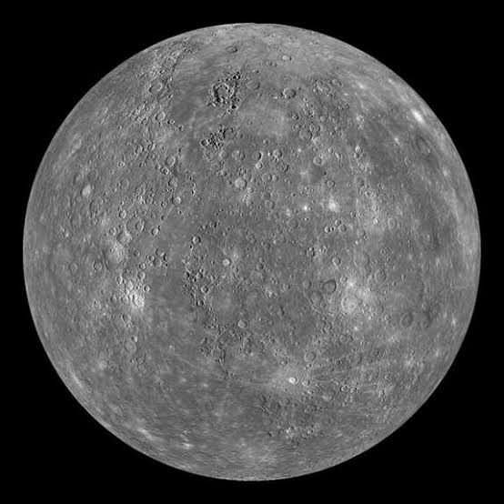
Hành tinh gần Mặt Trời nhất.
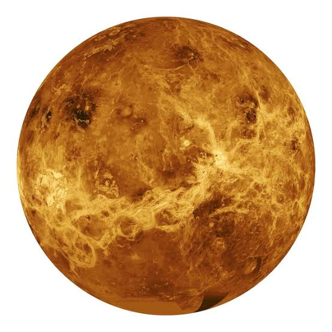
Hành tinh nóng nhất trong Hệ Mặt Trời.
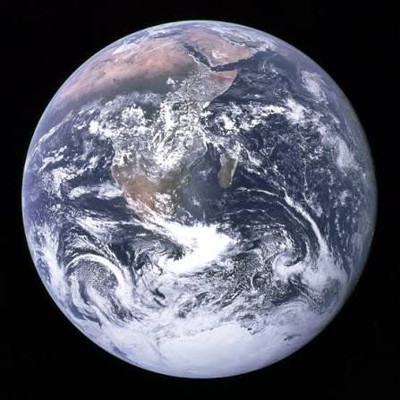
Ngôi nhà của sự sống mà chúng ta biết.
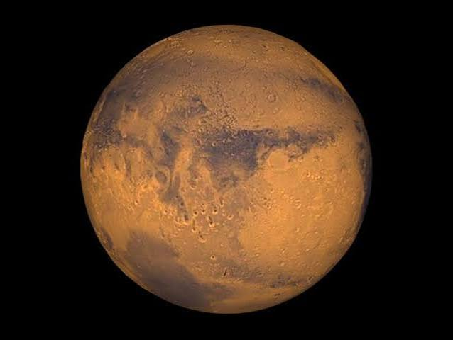
Được biết đến với tên gọi hành tinh đỏ.
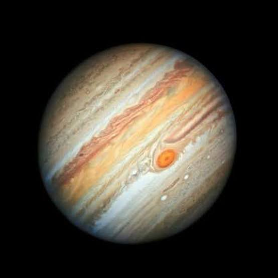
Hành tinh lớn nhất Hệ Mặt Trời.
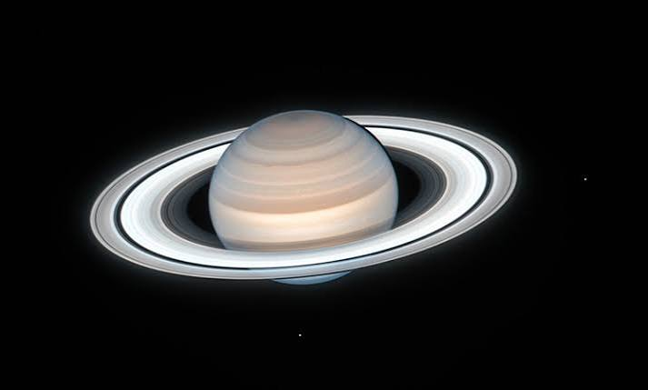
Nổi bật với hệ thống vành đai rộng lớn.
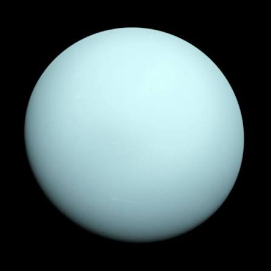
Một hành tinh băng khổng lồ có màu xanh nhạt.
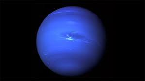
Hành tinh xa Mặt Trời nhất trong tám hành tinh.
GALAXIES & STARS
Khám phá những hệ thống sao khổng lồ, các tinh vân rực rỡ và vẻ đẹp kỳ diệu của những ngôi sao trong vũ trụ.
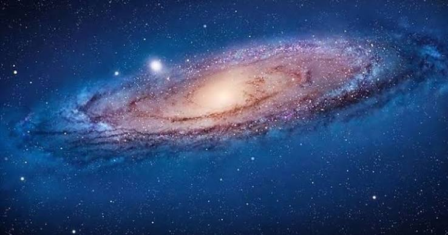
Thiên hà chứa Hệ Mặt Trời của chúng ta, với cấu trúc dạng xoắn ốc và hàng tỷ ngôi sao.
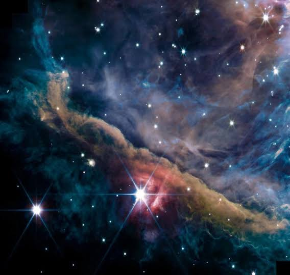
Những đám mây khí và bụi vũ trụ, nơi có thể hình thành các ngôi sao mới.
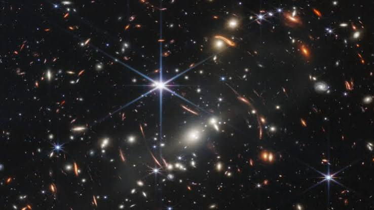
Các thiên thể phát sáng nhờ phản ứng nhiệt hạch diễn ra bên trong lõi.
UNSOLVED MYSTERIES
Vũ trụ vẫn còn chứa đựng nhiều hiện tượng kỳ lạ mà khoa học đang tiếp tục nghiên cứu và khám phá.
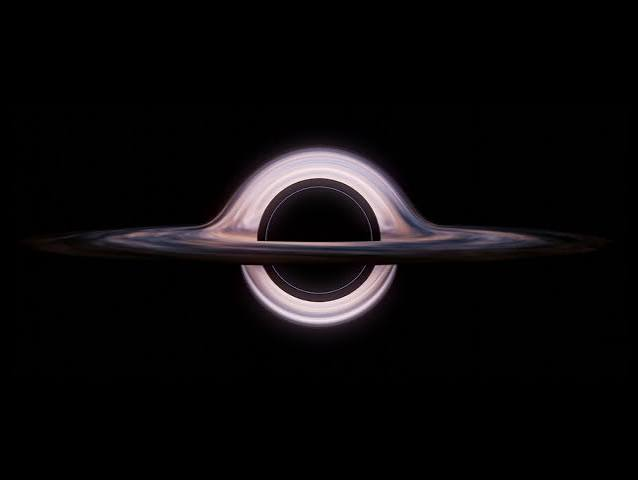
BLACK HOLEHố đen là vùng không-thời gian có lực hấp dẫn cực kỳ mạnh, đến mức ánh sáng cũng không thể thoát ra khi đã vượt qua chân trời sự kiện.
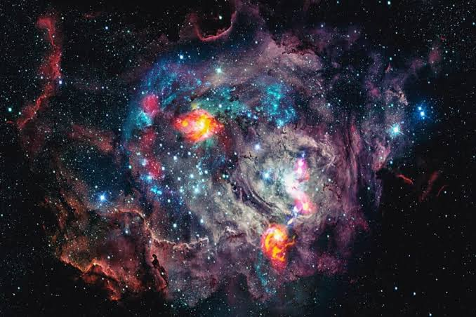
DARK MATTERVật chất tối không phát ra hay phản xạ ánh sáng theo cách chúng ta có thể quan sát trực tiếp. Sự tồn tại của nó được suy ra qua tác động hấp dẫn.
SPACE EXPLORATION
Con người không ngừng nghiên cứu và khám phá những vùng không gian rộng lớn bên ngoài Trái Đất.
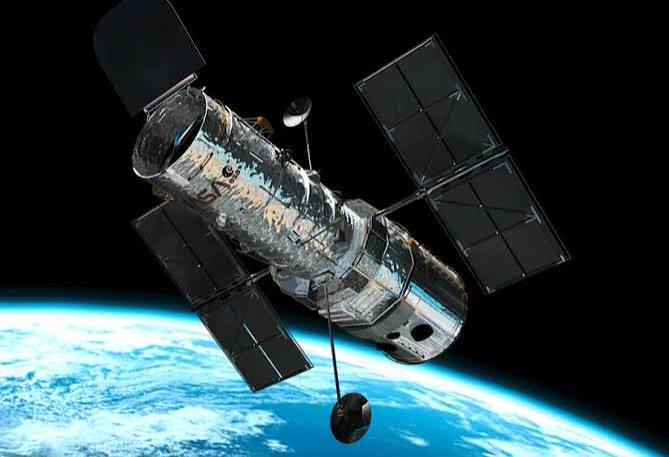
SPACE TELESCOPEGiúp các nhà khoa học quan sát những thiên hà, ngôi sao và các vật thể ở rất xa trong vũ trụ.
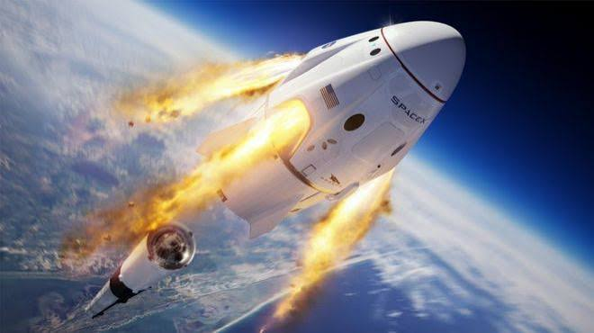
SPACECRAFTĐưa con người và thiết bị khoa học ra ngoài không gian để thực hiện các nhiệm vụ nghiên cứu.
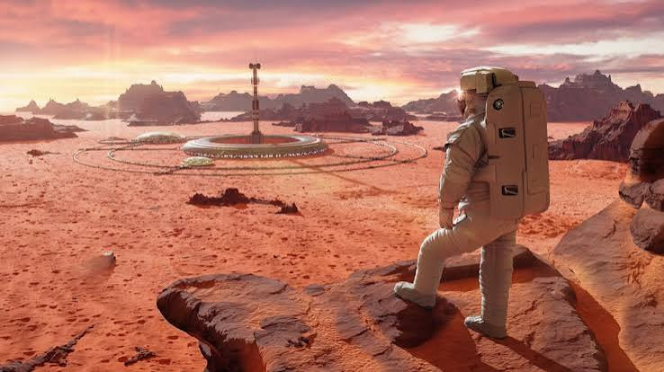
MARS EXPLORATIONCác robot tự hành nghiên cứu bề mặt Sao Hỏa, tìm hiểu địa chất và dấu hiệu sự sống trong quá khứ.